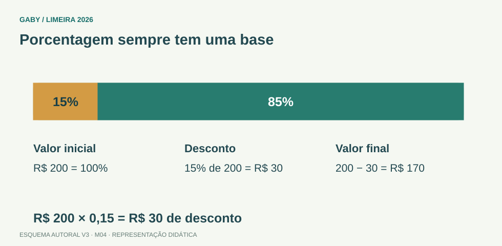

Objetivos do módulo
- Converter porcentagem em fração/decimal.
- Calcular aumentos e descontos.
- Resolver juros simples com J=C·i·t.
Porcentagem sempre tem uma base

Descrição em texto do esquema
- Valor inicial: R$ 200 = 100%
- Desconto: 15% de 200 = R$ 30
- Valor final: 200 − 30 = R$ 170
Oficina visual · aplique o esquema
Um valor de R$ 100 aumenta 10% e depois cai 10%. Ele volta ao valor inicial?
Atividade autoral complementar da V3. Registre sua resposta; a resolução está no arquivo de gabarito e revisão.
Mapa do conteúdo
1. Porcentagem como razão de 100
p% = p/100. Assim, 15%=0,15; 125%=1,25. Para encontrar p% de V, multiplique V por p/100.
2. Fator de aumento e desconto
Aumento de p% → multiplicar por 1+p/100. Desconto de p% → multiplicar por 1−p/100. Essa forma reduz erros em questões sucessivas.
3. Percentuais sucessivos
Aumento de 10% seguido de desconto de 10% não retorna ao valor inicial: fatores 1,10×0,90=0,99, ou seja, queda líquida de 1%.
4. Juros simples
J=C·i·t, com taxa e tempo na mesma unidade. Montante M=C+J. Em juros simples, os juros crescem linearmente, calculados sempre sobre o capital inicial.
5. Variação percentual
Variação=(novo−antigo)/antigo×100%. O denominador é o valor de referência inicial, não o novo.
Exemplos resolvidos passo a passo
Exemplo 1
Situação: 20% de R$350.
Exemplo 2
Situação: Produto de R$200 com desconto de 15%.
Exemplo 3
Situação: R$1.000 a 2% ao mês por 5 meses, juros simples.
Pegadinhas e erros frequentes
- Somar percentuais sucessivos sem considerar a nova base.
- Usar 15 em vez de 0,15.
- Misturar taxa mensal com tempo em anos.
- Calcular variação dividindo pelo valor final.
Resumo de prova
- p%=p/100.
- Aumento: fator 1+p; desconto: 1−p.
- Sucessivos multiplicam fatores.
- J=C·i·t; M=C+J.
- Variação usa valor inicial no denominador.
Exercícios do módulo
Resolva sem consultar o arquivo de gabarito. As questões são autorais e construídas para treinar os conceitos do edital.
- 80
- 40
- 25
- 60
- 400
- 550
- 450
- 490
- 880
- 840
- 805
- 760
- mesmo valor
- 1% abaixo
- 1% acima
- 20% abaixo
- R$60
- R$2060
- R$2240 de juros
- R$240
- 2060
- 2003
- 2240
- 240
- 2%
- 20%
- 120%
- 16,7%
- 4
- 0,4
- 0,04
- 40
- 30
- 170
- 6
- 60
- apenas taxa
- tempo sem capital
- capital inicial em cada período
- montante acumulado sempre
Quando terminar, abra Matemática 04 - Porcentagem e Juros Simples - Gabarito e Revisão.
Checklist de domínio
- ☐ Converter porcentagem em fração/decimal.
- ☐ Calcular aumentos e descontos.
- ☐ Resolver juros simples com J=C·i·t.
Meta do módulo: 80% ou mais nas questões, sem depender de consulta.
Referências e conteúdos auxiliares
- IMPA/OBMEP — Portal da Matemática, módulosVideoaulas, exercícios e materiais por tema. Localize o assunto indicado no roteiro complementar do módulo.
Referências externas de apoio consultadas para a V3 em 27/09/2026. A origem das questões é o material autoral do projeto; estes links não indicam que uma instituição publicou ou validou os exercícios. As páginas externas precisam de internet. Em informática, confira a versão do programa; em legislação, observe o recorte e as regras de atualização do edital.